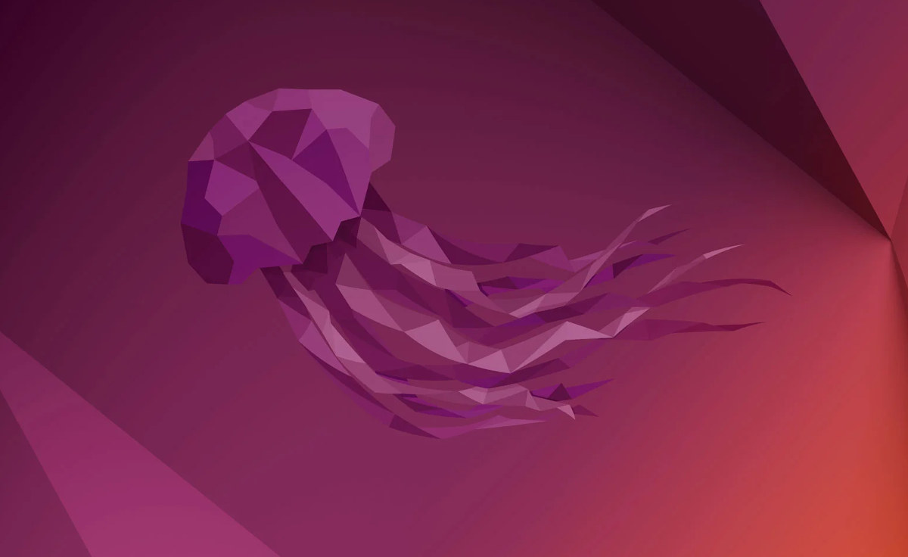

Latest LTS version of Ubuntu
September 25, 2022 by Kerene Wright
The latest version of Ubuntu would be the Ubuntu 22.04 LTS "Jammy Jellyfish". In this new version there are some new features that are worth mentioning that I think you would like. First thing i noticed is the new customizable options for your pc where you can edit the accents of your desktop. You can also select a light or dark theme version as well.
Another thing I noticed about this new version is the performance and power improvements of this Linux desktop. This is the most massive upgrade for this new version release. Also, GNOME 42 also allows for a new power profile option which allows users to choose between the performance and power comsumption from the settings screen.